Open HCI ’09 : Workshop in Taipei @ NTU
This is the first HCI workshop that was initiated and organized by only NTU students, and the main purpose of this workshop, is to open the potential power of HCI domain research in NTU CS department and GINM.
此活動希望能夠讓專精於技術的資訊人才能夠從不同的角度來瞭解產品設計, 培養產品設計的觀念, 以及跨領域合作的經驗。以人為本的科技，才會是對社會有最大幫助的科技。本活動希望能夠將以人為核心的設計概念推廣到每個資訊人的心中。
更進一步，互動設計並不限於有價的產品，而是可以概化至所有人類生活空間中與其工具的互動模式，並期盼參與者能以此概念體察其日常經驗裡的互動問題，進而尋思更和諧互惠的人機互動遠景。
預期效益 The Effect of Open HCI workshop
讓台大資訊學群學生有機會更加深入了解HCI是什麼，產業中的HCI Prototyping 流程是如何運作。
讓參與工作坊之學員有機會直接接觸任職於HCI部門工作的業界人士的第一手經驗分享。
於工作坊中獲得的學習經驗將能直接幫助學員更進一步研究HCI領域或發展HCI相關的研究構想。
學員於工作坊過程中所發展的HCI構想將於最後一天成果展中以Prototype或Poster等Presentation方式展出 ，以獲取相關業界、學界人士的建議，並促成學員之間的意見交流。
成果展中產出的研究構想與成果將可能由TA協助成員在活動後進一步發展為具有潛力的學術研究論文，並進行相關發表，提昇台大資訊學群在HCI研究領域更進一步深耕之基礎。

HCI Workshop in Taipei @ NTU
ORGANIZED BY
Keynes
台灣大學 資訊網路與多媒體研究所 博士班
NTU GINM, PhD Student
dAb
臺灣大學 資訊網路與多媒體研究所 博士班 博士候選
NTU GINM, PhD Candidate,
also a member of IxDesignLab. Taiwan
W.C. Tsai
臺灣大學 資訊網路與多媒體研究所 博士班
NTU GINM, PhD Student
Jones
余能豪 Nan-Hao Yu
臺灣大學 資訊網路與多媒體研究所 博士班
NTU GINM, PhD Student
預期效益 The Effect of Open HCI workshop
讓台大資訊學群學生有機會更加深入了解HCI是什麼，產業中的HCI Prototyping 流程是如何運作。
讓參與工作坊之學員有機會直接接觸任職於HCI部門工作的業界人士的第一手經驗分享。
於工作坊中獲得的學習經驗將能直接幫助學員更進一步研究HCI領域或發展HCI相關的研究構想。
學員於工作坊過程中所發展的HCI構想將於最後一天成果展中以Prototype或Poster等Presentation方式展出，以獲取相關業界、學界人士的建議，並促成學員之間的意見交流。
成果展中產出的研究構想與成果將可能由TA協助成員在活動後進一步發展為具有潛力的學術研究論文，並進行相關發表，提昇台大資訊學群在HCI研究領域更進一步深耕之基礎。
Prgram in 6 Days
Day 1 / 第一天 (7/6，一)
Opening Talk/ What is HCI AM 9:00~9:15
講者: 朱浩華 副教授
Hao-Hua (Hao) Chu
Associate Professor
National Taiwan University (國立臺灣大學)
Department of Computer Science and Information Engineering (資訊工程學系/所)
Graduate Institute of Networking and Multimedia (資訊網路與多媒體研究所) 合聘 副教授
miniTALK: What is HCI
講者: Keynes /dAb /Jones /文傑
miniTALK: Workshop Goal
講者: Keynes（/dAb /Jones /文傑）
Exercise:
11:00 分組茶聚
12:00 用餐
14:00 發表各組想法
TALK / 觀察與設計 AM 15:00~17:15
講者: 黃宣龍 資策會創新應用服務研究所副組長
Michael
Exercise: 各自帶開去做實地OBSERVATION
Day 2 / 第二天 (7/7，二)
TALK / Brainstorming and Contextual Design AM 09:00~10:30
講者: 唐玄輝 助理教授 (台科大商業設計研究所)
Hsien-Hui Tang
Assistant Professor
Department of Commercial and Industrial Design,
National Taiwan University of Science and Technology
國立台灣科技大學工商業設計系暨設計研究所專任助理教授
http://www.drhhtang.net
TALK / User Experience Design AM 11:00~12:30
講者: 李易修 (華碩電腦工業設計部創新工程師)
Lis186. Lee
Creative Engineer
asusdesign
http://www.lis186.com/
Exercise: BRAINSTORMING and Review
Exercise: 做BRAINSTORMING, 素材為昨天的觀察
Exercise: 將BRAINSTORMING的東西以 experience 做REVIEW
Day 3 / 第三天 (7/6，三)
TALK / 認知與設計 AM 9:00~10:30
講者: 蔡志浩 (高雄醫大心理系助理教授)
Chih-Hao Tsai
Assistant Professor
Department of Psychology, Kaohsiung Medical University
高雄醫學大學心理學系助理教授
http://chtsai.org/
TALK / Visual Design in Interaction AM 11:00~12:30
講者: 陳文剛 (AVerMedia 使用者經驗設計中心 主任)
Wen-Gon (David) Chen
User Experience Design Center Director
助講人: 趙嘉琛 (AVerMedia 使用者經驗設計中心)
Exercise: Proposal for each group. 學員提案
Day 4 / 第四天 (7/6，四)
TALK / Metaphor Design & Prototype AM 9:00~10:30
Day 5 / 第五天 (7/6，五)
Special TALK /
講者: 荷蘭 TU/e Prof. Caroline Hummels
訪台演講 PM 14:00-15:30 @ 北科大
Day 6 / 第六天 (7/6，六)
FINAL PRESENTATION:
Student present for final concept design.
評審: （歐陽明), 梁容輝, 朱浩華
Special Thanks
National Taiwan University,
Graduate Institute of Networking and Multimedia.
Department of Computer Science and Information Engineering
and Prof. Yi-Ping Hung